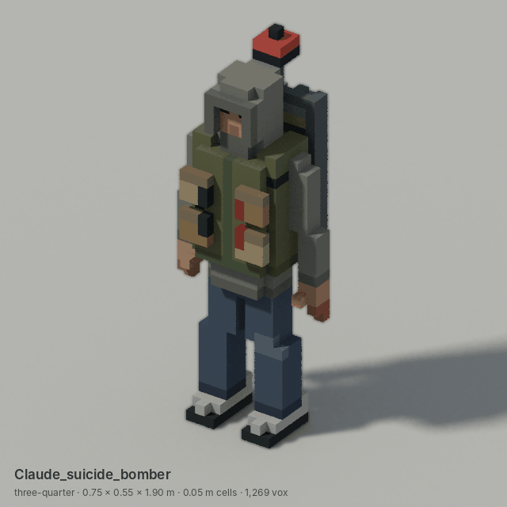
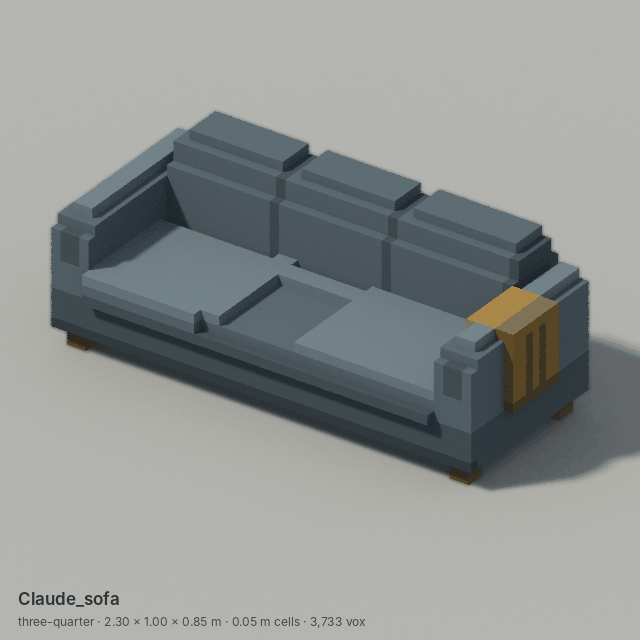
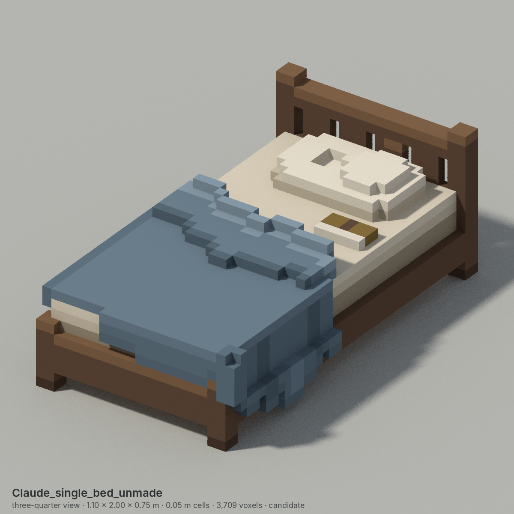
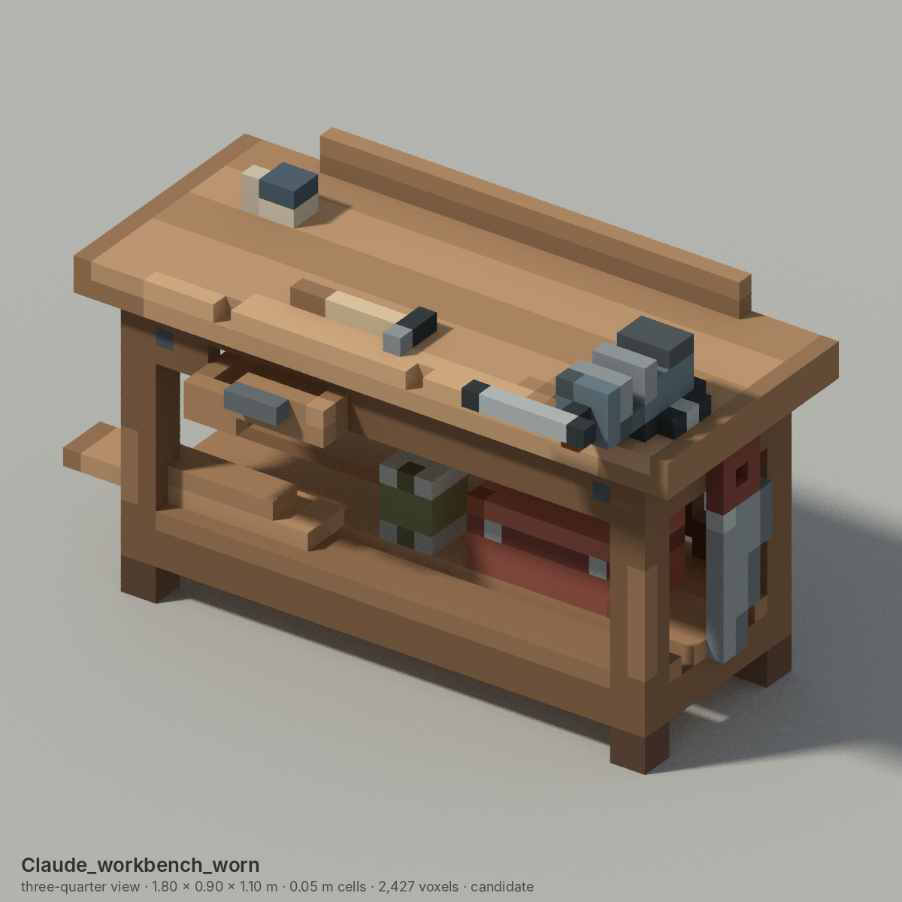
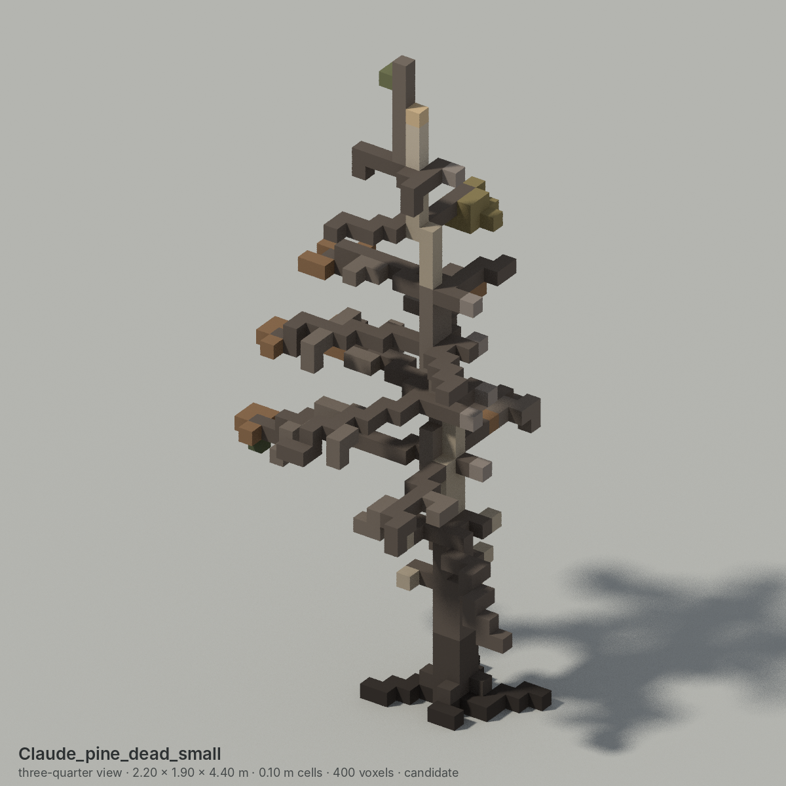

Claude_survivor0.65 × 0.50 × 1.75 m · 0.05 m cells · 1006 voxels · candidate.vox · front · side · scaleCompare in 3D →
Claude_ordinary_psycho0.55 × 0.50 × 1.80 m · 0.05 m cells · 864 voxels · candidate.vox · front · side · scaleCompare in 3D →
Claude_runner0.55 × 0.60 × 1.75 m · 0.05 m cells · 594 voxels · candidate.vox · front · side · scaleCompare in 3D →
Claude_brute0.95 × 0.45 × 2.10 m · 0.05 m cells · 1775 voxels · candidate.vox · front · side · scaleCompare in 3D →
Claude_suicide_bomber0.75 × 0.55 × 1.90 m · 0.05 m cells · 1269 voxels · candidate.vox · front · side · scaleCompare in 3D →
Claude_sofa2.30 × 1.00 × 0.85 m · 0.05 m cells · 3733 voxels · candidate.vox · front · side · scaleCompare in 3D →
Claude_single_bed_unmade1.10 × 2.00 × 0.75 m · 0.05 m cells · 3709 voxels · candidate.vox · front · side · scaleCompare in 3D →
Claude_dining_table1.60 × 0.90 × 0.75 m · 0.05 m cells · 1048 voxels · candidate.vox · front · side · scaleCompare in 3D →
Claude_workbench_worn1.80 × 0.90 × 1.10 m · 0.05 m cells · 2427 voxels · candidate.vox · front · side · scaleCompare in 3D →
Claude_wood_stove_compact0.80 × 0.75 × 1.00 m · 0.05 m cells · 1267 voxels · candidate.vox · front · side · scaleCompare in 3D →
Claude_rain_collector_basic1.05 × 1.00 × 1.60 m · 0.05 m cells · 2390 voxels · candidate.vox · front · side · scaleCompare in 3D →
Claude_pine_dead_small2.20 × 1.90 × 4.40 m · 0.1 m cells · 400 voxels · candidate.vox · front · side · scaleCompare in 3D →